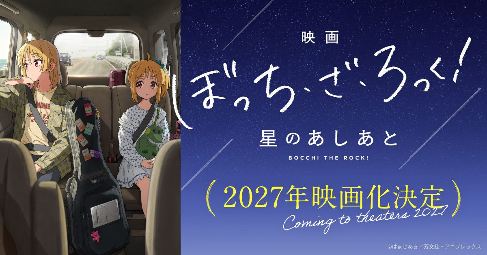

2026-11-02 · 剧场版深读
Aniplex 在 11 月 1 日于下北泽「SHELTER 35 周年」纪念活动上放出了一枚官宣：
《电影 孤独摇滚！ 星之足迹》（映画ぼっち・ざ・ろっく！ 星のあしあと）确定制作，2027 年日本院线上映。
动画由 CloverWorks 制作，若林信执导，吉田惠里香编剧，堀口悠纪子担任角色设计；
内田真礼与铃代纱弓继续配音伊地知星歌与伊地知虹夏。
改编源是原作漫画第 5 卷末尾收录的特别篇〈星に手向けるあいの花〉，讲「十年前的那场离别」如何织成后来的梦想。
第一波 Mubichike 预售票 11 月 6 日开卖，同期还宣布了「结束バンド ASIA TOUR 2027 "To Asia."」——大阪 3 月 13、14 日，首尔 5 月 8 日，香港 5 月 22 日。
但真正值得我们写这篇的，是藏在官宣里的一个反常：
一部以后藤一里的孤独命名的作品，它的第一部电影，主角不是后藤一里；而它打算论证的东西，恰好是第一季从头到尾在否定的东西。

先说一件几乎所有人都会跳过的事。 通常的改编链条是这样的：漫画先存在，动画从漫画里取一段。 而《星之足迹》这条线，走的是完全相反的路。
原作者滨路晶在官宣感言里写得非常直白： 「这篇故事，是我在电视动画第一季参观配音现场后、回家的路上想到的。」 她想补完的是动画第 8 集结尾提到的那一点点姐妹的过去，于是画下了 STARRY 开业之前的经历，把它收进漫画第 5 卷。 而现在，这段因为动画才被写出来的漫画，又被改回了动画——只不过这一次是电影。
换句话说：动画催生了漫画，漫画再回到动画。中间那一段不是源头，是回路。 这件事的后果比听起来大： 观众在 2022 年看第 8 集的时候，并不知道 STARRY 这个名字是什么意思。 那句寓意——「希望这里成为一个能把光芒照射到已逝母亲身边的闪耀地方」—— 是在动画播完之后才被补写进原作的。 也就是说，一个今天被粉丝当成常识、当成角色核心动机的设定，其实来得比大多数人以为的晚。 它是补丁，不是地基。而这部电影要做的事，是给这个补丁补一块地基。
要理解这部电影为什么非得是前传，得先把星歌的经历摊开。 按原作给出的信息：星歌比虹夏大十二岁，早年组乐队，因为乐队而长期忽略了母亲和妹妹，母女和姐妹的关系都不算好。 后来母亲意外去世，虹夏开始不愿上学。 星歌做了两件事——替过世的母亲给虹夏梳头，然后带虹夏去看了自己的演出。 虹夏因此产生了对乐队的憧憬，开始学鼓。 星歌知道这件事之后，离开了自己原本的乐队，开了一间叫 STARRY 的 Live House 来支持妹妹。
所以 STARRY 到底是什么？ 它不是创业项目，是一个人为自己造成的亏欠做的偿付工程。 名字里的那层意思——让众多如繁星般的乐队在这里演出，好把光送到已经不在的母亲身边—— 是一句永远不可能被验证的愿望。 母亲不会回来，光也照不到任何地方。 星歌清楚这一点，她还是把整个后半段人生押在这件事上了。
这一点非常关键，因为它把星歌放到了一个和后藤一里完全相反的坐标上—— 后面会详细说。
这次官宣里最值得反复读的，不是视觉图也不是卡司，是导演若林信的导演感言。他是这么说的（大意）：
「原作是梦想与秘密的故事。其中引导星歌前进的，是愿望的力量。 当『愿望』无法走向『实行』时，就能看见最后的挣扎。 比起『实行』，『愿望』是不伴随行动的软弱选择，哪一方更能对结果负责是很明显的事。 然而看着这个故事时我想，正是这个『愿望』，为星歌、虹夏带来了最大的贡献。 这一点十分有趣且充满魅力。我想在电影中保留这份魅力。」
把这段话翻译成我们的话： 《孤独摇滚！》第一季的主题是「行动战胜空想」。 后藤一里想被需要，但她的成长全部发生在被迫上台的那几秒； 喜多郁代想待在乐队里，但她的成长发生在承认自己根本不会弹吉他的那一刻； 山田凉想做自己的音乐，代价是承认自己一直在随波逐流。 每一个人的弧线，都是从「我想要」走到「我做了」。 愿望本身在这部作品里从来不是美德，它只是起跑线。
而星歌恰好是一个例外。 她的愿望（让光照到妈妈身边）在物理上不可能兑现，她的实行（放弃自己的乐队、开一间店）也永远无法证明那个愿望被实现了。 若林信自己都承认「愿望是不伴随行动的软弱选择」—— 但他紧接着说，正是这个软弱的选择，成就了两个人。 这是《孤独摇滚！》这个 IP 第一次正面去论证一个它一贯否定的命题。 如果这个论证成立，它会把整个作品的世界观往外扩一圈； 如果不成立，这部电影就会变成一部很漂亮的、但和本篇没什么关系的番外。
第二个几乎没人提的细节：电影的名字和原作篇名不一样。
原作特别篇叫 〈星に手向けるあいの花〉——「手向ける」在日语里是供奉、献给逝者的意思， 这个名字里的花，是上坟的花。它指向的是死者，是悼念，是一束放在那里的东西。 而电影叫 《星のあしあと》——星之足迹。 足迹是走的人留下的，指向的是生者，是过程，是「她们是怎么走到 STARRY 的」。
从「献给星星的花」到「星星的足迹」，镜头从墓前挪到了路上。 这跟上面第三节完全对得上： 若林信要讲的不是「两个人怎么悼念母亲」，而是「一个不可能兑现的愿望，怎么把两个人推到了今天这个地方」。 改名这个动作，本身就是编剧吉田惠里香的立场声明。
顺带一提，吉田惠里香的感言里有一句很实在的话： 她当年读到这个短篇时就想影像化，还「自作主张地下定决心：要做动画第二季的话，绝对要写这个故事」， 结果接到的邀约是电影——她的反应是「电影！？太棒了吧！」，马上接了。 这段故事本来是被她留给第二季的，现在被提前支取了。 这句话后面会再回来咬人。
已经公开的先导视觉图，构图是姐妹俩坐在车子的后座，中间放着一个贴满贴纸的吉他箱。 官方的说法是「描绘十年前的离别」——也就是说，画面里的这辆车，正在把她们从某个地方带走，或者带去某个地方。
把吉他箱放在两个人中间，是一个很讲究的选择。 它既是分隔物（两人分坐两端，中间隔着一件行李）， 也是唯一的连接物（那是星歌的乐器，也是虹夏后来学鼓的理由）。 一个前传需要的全部信息——她们是谁、她们之间隔着什么、她们被什么绑在一起—— 一张图就讲完了。 如果电影正片能维持这个密度，那它不会难看。
把时间线摆出来，你会看到一个不太舒服的排列：
也就是说：第二季官宣了近两年、做到分镜收尾，仍然没有一个日期；而一部电影先拿到了 2027 年这个上映年。 而且这两条线是分开的产线——电影归若林信，第二季归山本悠介，互不隶属。
我们的判断是：这不是「电影挤掉了第二季」，而是「电影是一份可以单独交付的短作业」。 特别篇只有一篇短篇漫画的体量，目标明确、周期可控、不需要等整季的作画排期； 而第二季是一个需要整体排产的长期工程。 在观众等第二季等到第三年的时候，先递上一份能独立成立、能单独卖票、还能顺带把亚洲巡演绑在一起的东西，是很合理的选择。 吉田惠里香那句「第二季也在不远的将来」也印证了这一点：她心里清楚这两个项目是绑着卖的。
但风险也在这里： 一篇短篇漫画要撑起一部院线电影的长度，要么大幅扩写，要么塞进大量原创。 吉田惠里香已经明说了她「以精彩的方式更加拓展了这篇故事」，滨路晶也说剧本做了扩充。 扩写得好是补完，扩写不好就是把一段留白填满。 而 STARRY 这个名字的寓意之所以动人，恰恰因为它原来只有几页、留着白。
| 角色 | 愿望 | 实行 | 愿望能否被实行兑现 |
|---|---|---|---|
| 后藤一里 | 想被需要、想有朋友 | 上台、演出、被看见 | 能，且立刻被验证 |
| 喜多郁代 | 想待在乐队里 | 承认不会弹吉他，重新加入 | 能，代价是当众丢脸 |
| 山田凉 | 想做自己的音乐 | 放弃随波逐流，选定方向 | 能，但需要放弃别的 |
| 伊地知虹夏 | 想组一支自己的乐队 | 一个个把人拉进结束乐队 | 能，且是本篇主线 |
| 伊地知星歌 | 把光送到已故母亲身边 | 退出自己的乐队，开 STARRY | 永远不能——这是本篇唯一的例外 |
这张表是本文的核心。 前四行的结构完全一致：愿望 → 行动 → 结果，闭环成立。 只有最后一行，愿望那一栏填的是一个死者，实行那一栏填的是一段被放弃的人生， 而结果那一栏是空的——永远会是空的。 《星之足迹》的全部价值，就取决于它敢不敢让那一栏一直空着。 如果电影最后给了一个「母亲的在天之灵看得到了」式的收束，那它就把自己讲砸了； 如果它敢承认「她做的一切都不会被那个人看见，但她还是做了」， 那它会是这个 IP 到目前为止最锋利的一次表达。
我们的观点：这次官宣最容易被误读成「换主角」。 我们不同意这个说法。换掉的只是视角，不是主角。 后藤一里是《孤独摇滚！》的情感引擎，这一点不会变； 但这个故事里，波奇在结构上根本无法出场—— 它讲的是 STARRY 开业之前，而波奇是 STARRY 开业之后才被虹夏拉进门的那个人。 所以「主角换成星歌」不是一次取舍，是这段故事在物理上只能这么拍。 真正值得警惕的反而是另一件事： 一部没有波奇的《孤独摇滚！》，要靠什么来维持「孤独摇滚」的味道？ 从目前公布的信息看，答案是把「孤独」从社交恐惧换成了丧亲之痛—— 这是同类情绪，但不是同一种情绪，而后者更难做出笑点。 若林信那段「愿望 vs 实行」的论述说明他想清楚了这件事，但想清楚不等于做得到。
我们的案例对比：把这次和同工作室的两条支线放一起看会更清楚。 《剧场总集篇 Re:》与《Re:Re:》做的是重剪，零风险、零增量，本质是延长商业寿命； 第二季做的是续写，风险最高、也是粉丝真正在等的； 而这次的电影做的是回填——往一个已经讲完的故事中间插一块原本不存在的地基。 回填这个动作的自由度介于两者之间：它不会破坏既有剧情（因为发生在之前），但它有可能破坏既有情感的留白。 STARRY 名字的寓意目前之所以动人，一部分原因就是它原本只存在于几页纸里。
我们的实验：2027 年上映后我们打算做三个测量。 一是「愿望兑现率」：数一数正片里有多少次直接给出「母亲看到了／收到了」的暗示。 只要出现一次明确的回应，我们就会判定它选了安全牌。 二是「波奇缺席感」：记录正片里结束乐队其他三人的出场时长占比—— 如果虹夏之外的人被大量塞进来，说明制作方自己也不信任这个没有波奇的故事。 三是「扩写比例」：对照原作特别篇的分镜数量与成片时长， 如果新增内容的比重超过一半，那它实际上是一部原创电影，宣传口径应该改。
我们的评分：主题锐度与立意 8.8／兑现确定性与体量风险 7.0 → 综合 7.9。 给到 8.8，是因为「动画催生漫画、漫画再改回动画」这条逆向因果， 配上若林信那段几乎是反本篇的导演阐述，构成了一个很少见的创作命题—— 一部以行动为信仰的作品，回头去论证愿望的价值。 扣到 7.0，是因为三件事至今没有答案： 具体档期（只有一个「2027 年」）、成片时长与扩写比例、以及第二季到底还要等多久。 这三条恰好决定「它好不好」「它多长」「它是不是在替第二季拖延时间」——目前全悬着。
分三类人说：
最后记一件小事。 这次官宣的场合，是下北泽 SHELTER 的 35 周年—— 也就是 STARRY 在现实里的原型。 在一间 Live House 的生日会上，宣布一部关于「这间 Live House 为什么存在」的电影。 这个安排本身就很会。 而它同时也提醒我们一件事： STARRY 从来不只是一个场地名，它是一句没能送到的问候。这部电影能不能成立，就看它敢不敢让那句问候一直送不到。